Introduction
The use of wireless communication technologies is becoming increasingly prevalent in modern electronics, and Bluetooth is one of the most widely used wireless communication protocols. In this lab exercise, we will explore the fundamentals of Bluetooth communication using the Artemis board, an open-source microcontroller platform that is compatible with Arduino. Bluetooth communication is particularly useful for applications that require wireless control or data transmission, such as remote sensing and actuation, wearable devices, and Internet of Things (IoT) applications.
Pre-Lab
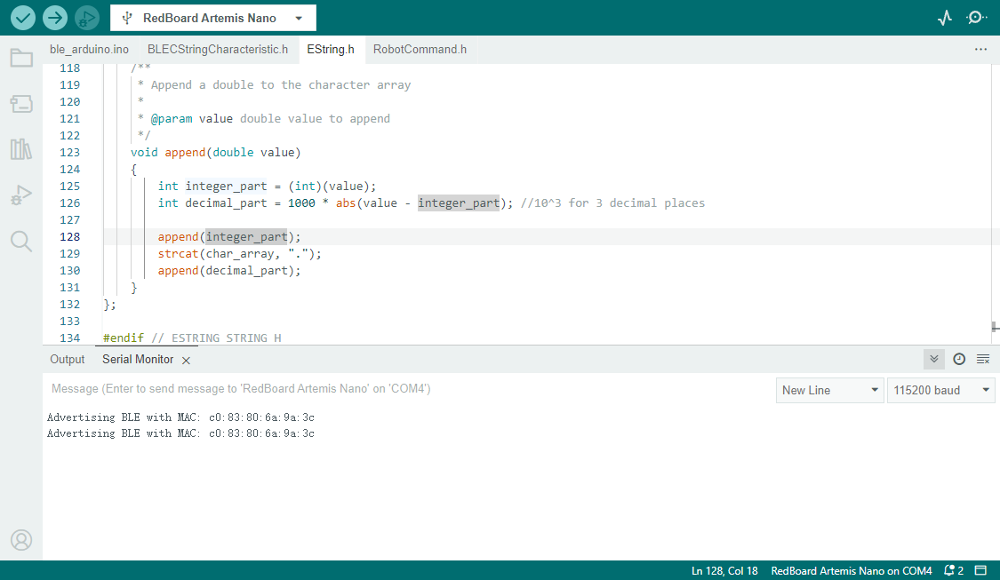
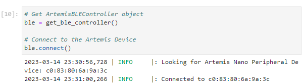
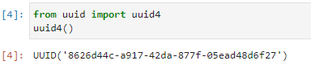
To prepare for the lab exercise, we will need to perform several setup tasks to ensure that we can communicate with the Artemis board over Bluetooth. These tasks include:
1. Installing a Python virtual environment: We will use a Python virtual environment to isolate our Python packages and ensure that we have the necessary dependencies installed. This will help to prevent conflicts with other Python packages that may be installed on our computer.
2. Activating the virtual environment: Once the virtual environment is installed, we will need to activate it to ensure that we are using the correct Python interpreter and packages.
3. Installing necessary packages and Setup Informations: We will need to install several Python packages to communicate with the Artemis board over Bluetooth. Then find out the UUID and artemis address for my device.
4. Downloading and extracting the codebase: We will need to download and extract the codebase for the lab exercise, which includes both Arduino .ino files and Python scripts.
By completing these setup tasks, we will be ready to explore Bluetooth communication with the Artemis board and perform the lab exercises. Connecting the Artemis to the computer, and make sure they can communicate (as shown on figures above).
CodeBase
The ble_robot directory contains two subdirectories, ble_arduino and ble_python, which are essential components for setting up Bluetooth communication between the Artemis board and a host computer. The ble_arduino folder includes the .ino file and c header files, which must be uploaded to the Artemis board for establishing the Bluetooth connection. The ble_python folder contains several files, including a demo Jupyter Notebook, a .yaml file that assigns unique UUIDs for the Bluetooth connections, and cmd_types.py, which is a Python class that handles all the commands.
To establish a Bluetooth connection, the UUIDs in the .yaml file on the computer side must match the UUIDs in the .ino file on the Arduino side. This is crucial for the BLE protocol to identify and pair the Bluetooth connection. By correctly matching the UUIDs, the Artemis board and the host computer can establish a secure and reliable Bluetooth communication channel. The Jupyter Notebook in the ble_python folder provides an easy-to-use interface for sending and receiving data over the Bluetooth connection, which allows users to control the Artemis board and perform various tasks remotely.
Lab Tasks
1. Configurations
In Pre-lab, we have to find and change the UUID and Artemis Address, then change those on the ble_service, and make RX_STRING ID matches with TX_STRING value in arduino, so the Artemnis can communicate with computer.
3. Send and Receive ECHO command
The ECHO command is a useful tool for verifying that data is being transmitted correctly to the Artemis board.
To enable the ECHO command, it is necessary to add it to the Command Types in the Artemis code and the cmd_types.py file. Additionally, a case statement must be added to the Artemis code to send a characteristic string containing the word "Echo." In the provided image, the ECHO command is transmitted to the Artemis, and the message is received from the Artemis board as shown. This allows us to confirm that data is being transmitted correctly between the host computer and the Artemis board.
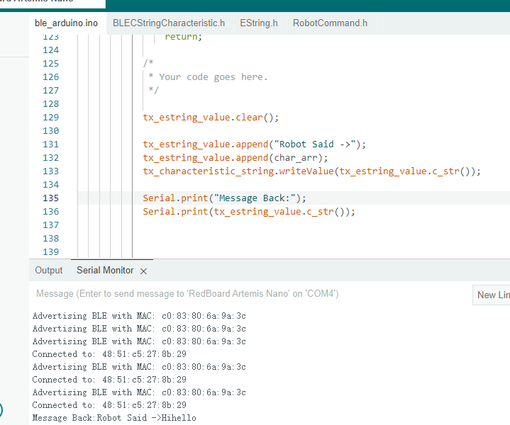
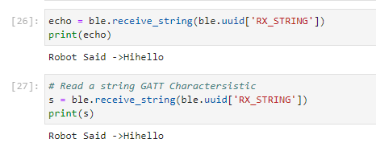
Thess graph above shows that I am able to run all the cells befpre carrying out the lab tasks.
4. Get Time Command
For this task, I wrote a new case and assigned a new veriable.
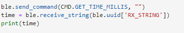
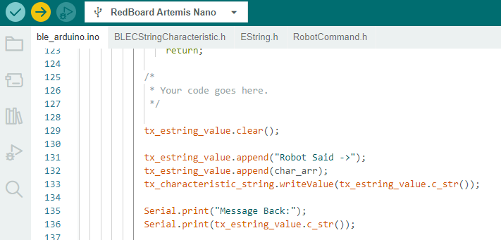
And re-wrote the get value function on jupyter lab
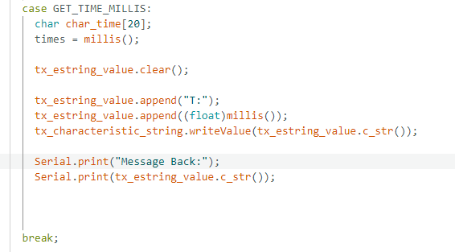
T:259792
5. Notification Handler
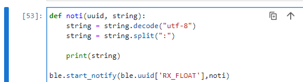
In order to process the string data received from the Artemis board, we will need to design a new function that will be able to parse the data and extract the relevant information. (I call it "noti") The data received from the Artemis board will be in the format of a string with a colon separating the different components. The second part of this string will be the value of time without any prefix.
To handle the incoming string data, we will use the ble.start_notify() function. This function will ensure that our "noti" function is automatically called whenever a new string is received, allowing us to efficiently and continuously process the incoming data. By splitting the incoming string using the colon as a delimiter, we can extract the relevant time data and use it for further processing or analysis as needed.
6. Get Temperature Command
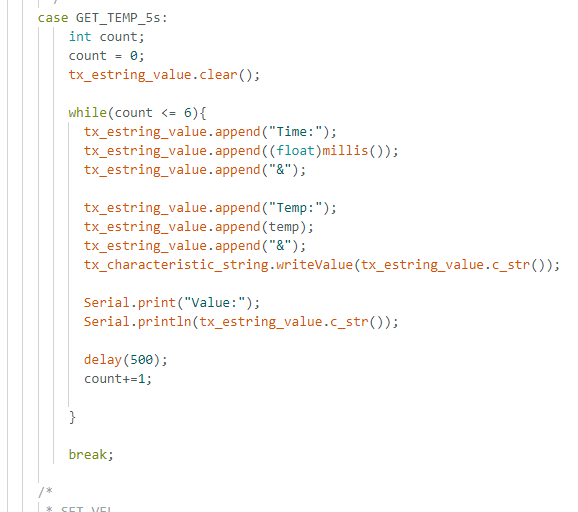
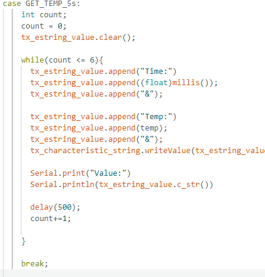
Value: Time:889760&Temp:85.201&Time:889760&Temp:85.201&Time:889765&Temp:85.379&Time:889760&Temp:85.201&Time:889765&Temp:85.379&
Time:889770&Temp:85.315&Time:889760&Temp:85.201&Time:889765&Temp:85.379&Time:889770&Temp:85.315&Time:889775&Temp:85.407&Time:889760 &Temp:85.201&Time:889765&Temp:85.379&Time:889770&Temp:85.315&Time:889775&Temp:85.407&Time:889780&Temp:85.412&
6.5. Rapid Temp
In this task, we need to do more based on the last one. As we can see, last one has turned a result to a series of strings that is not easy for people to look at the value. Now we will renew each data, so we can only see the newest version.
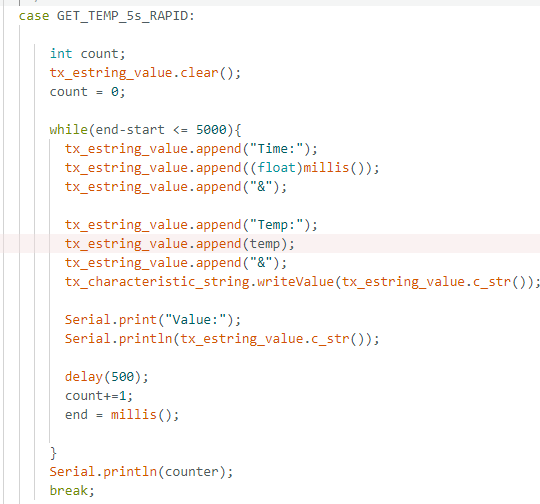
Value: Time:89503&Temp:85.314&
7. Limitation
The Artemis board is equipped with a total of 384KB of RAM, which is equivalent to 384,000 bytes. To determine how much data can be transmitted without exceeding this memory limit, we need to consider the data size and transmission rate. In this case, each data point consists of 16 bits or 2 bytes, and the transmission rate is 150 HZ.
Based on this information, we can calculate that in 5 minutes, which is equivalent to (560) seconds, we can transmit a total of (560)/(1/150) * 2 = 90,000 bytes of data. To transmit the maximum amount of data allowed by the memory limit of 384,000 bytes, we need to divide the memory limit by the data size and transmission rate to get the total number of transmission cycles. In this case, 384,000 / 90,000 = 4.267, which means that we can transmit 4.267 cycles of data in 5 minutes.
Therefore, the total time required to transmit 384,000 bytes of data without exceeding the memory limit is 4.267 cycles multiplied by 5 minutes per cycle, which is equal to 1280 seconds. This means that we can safely transmit 16-bit data at a rate of 150 HZ for a duration of 1280 seconds without running out of memory on the Artemis board.
8. Effective Data Rate and Overhead